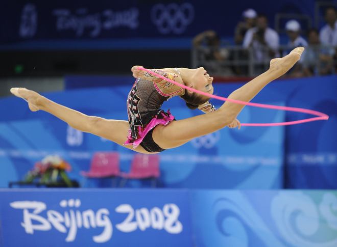

Go back
Rope:
- Rope is an apparatus that is made from synthetic/hemp material.
- The length is measured according to the gymnast.
- There are knots at each end of the rope for the gymnast to hold.
- Ropes have the be a colorful so that judges can see them.
- Since 2011, rope is no longer used in senior competitions.

Evgenia Kanaeva - 2008 Olympic Games.